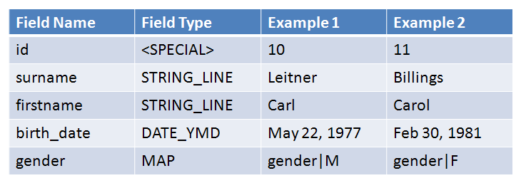
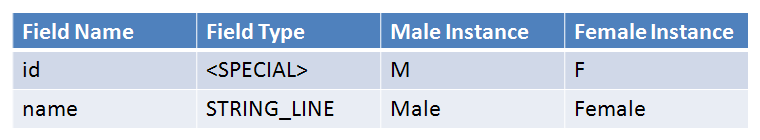

Introduction to Forms
iHRIS Administrator - Level I, © IntraHealth International, CC BY 4.0. Originally offered at hrhresourcecenter.org/elearning (CapacityPlus). Licence stated by its author, the folio owner, 2026-10-09.
1. Introduction to Forms
A Form is the basic collection tool for data in I2CE—similar to a table schema.
"Form Instance" is like a row in a database table.
This module outlines:
- forms and fields
- parent and child forms
- form classes
- form factory
- form storage
- defining forms
[audio Slide_01_final.mp3, not published] Listen to the Forms audio or access the transcript in the box to the right.
2. Forms and Fields
Fields are like the columns of a database table.
Subclasses I2CE_FormField controls how a form's data is edited and displayed depending on the fields type:
- Yes/No
- Integer
- String
- Multi-line string
- Dates
- Mapped Values
It also defines the storage and limits in the database.
[audio Slide_02_final.mp3, not published] Listen to the Forms audio or access the transcript in the box to the right.
3. Forms and Fields
Person form contains the fields:

This example has two instances: person|10 and person|11
Notice any data quality issues?
[audio Slide_03_final.mp3, not published] Listen to the Forms audio or access the transcript in the box to the right.
4. Forms and Fields
Gender form contains the fields:

[audio Slide_04_final.mp3, not published] Listen to the Forms audio or access the transcript in the box to the right.
5. Parent And Child Forms
Each form has the special field "parent".
Any form can be related to any other form by the parent—child relationship.
Passport_photo contains the fields:
[image withheld: into_forms3.gif shows a photograph of a child]
[audio Slide_05_final.mp3, not published] Listen to the Forms audio or access the transcript in the box to the right.
6. Form Classes
Form classes: an extra layer of abstraction when defining forms:
- all forms classes have the sub-class: I2CE_Form
- all fields are added to the form class not the form
- sometimes forms share the same fields
- some extra PHP code may need to be associated to a particular form class
Examples of form classes:
- I2CE_SimpleList has the field name of type STRING_LINE
- the forms gender, marital_status, facility_type, all use I2CE_SimpleList
- I2CE_SimpleList subclasses I2CE_List which subclases I2CE_Form
[audio Slide_06_final.mp3, not published] Listen to the Forms audio or access the transcript in the box to the right.
7. Form Factory
Form instances are created in the "form factory": $form_factory = I2CE_FormFactory::instance(); $genderObject = $form_factory->createForm(”gender|M”); $personObject = $form_factory->createForm(”person|10”);
Form factory looks up the form class associated to a form and adds fields: gender ? I2CE_SimpleList $formObj = new I2CE_SimpleList(); $formObj->addField(”name”, new I2CE_FormField_STRING_LINE()); $formObj->setId(”M”);
You can populate the fields of the form object by looking it up in the database: $personObj->populate();
[audio Slide_07_final.mp3, not published] Listen to the Forms audio or access the transcript in the box to the right.
8. Form Storage
The preceding example created a form via "createForm()" that created the structure to hold the data.
Filling up this structure with data read from the database is called "populating" the form.
[audio Slide_08_final.mp3, not published] Listen to the Forms audio or access the transcript in the box to the right.
9. Form Storage
There are many different ways of storing and reading data from the database. These are the "form storage mechanisms":
- entry: default form storage mechansim—logs changes made to the data
- magicdata: forms are stored in magic data—used for standard lists stored managed by central office
- flat: read forms in usual database table style such as the cached hippo_XXX tables
- multi-flat: reads forms as cached from multiple hippo_XXX tables stored across multiple databases—aggregation of decentralized data
[audio Slide_09_final.mp3, not published] Listen to the Forms audio or access the transcript in the box to the right.
10. Defining Forms
Defining a Simple List using a gender form as an example:
- values of this form populate any dropdown menus that map to the gender field (the gender field in the person form)
- "gender" is how to refer to the form when programming; the form will also need a human readable name
- the list is a standard list that should be shared across all sites (installations) so it should be saved in magic data
[audio Slide_10_final.mp3, not published] Listen to the Forms audio or access the transcript in the box to the right.
11. Defining Forms
Defining a Simple List example code: <configurationGroup name="gender_form" path='/modules/forms/forms/gender'> <configuration name="class" > <value>I2CE_SimpleList</value> </configuration> <configuration name="display" locale="en_US"> <value>Gender</value> </configuration> <configuration name="storage"> <value>magicdata</value> </configuration> </configurationGroup>
The form "gender" above is defined by a magic data node found in /modules/forms/forms.
[audio Slide_11_final.mp3, not published] Listen to the Forms audio or access the transcript in the box to the right.
12. Defining Forms
Defining a Simple List example code: <configurationGroup name="gender_form" path='/modules/forms/forms/gender'> <configuration name="class" > <value>I2CE_SimpleList</value> </configuration> <configuration name="display" locale="en_US"> <value>Gender</value> </configuration> <configuration name="storage"> <value>magicdata</value> </configuration> </configurationGroup>
The "class" for the gender form above is "I2CE_SimpleList". /modules/forms/forms/gender/class = I2CE_SimpleList
[audio Slide_12_final.mp3, not published] Listen to the Forms audio or access the transcript in the box to the right.
13. Defining Forms
Defining a Simple List example code: <configurationGroup name="gender_form" path='/modules/forms/forms/gender'> <configuration name="class" > <value>I2CE_SimpleList</value> </configuration> <configuration name="display" locale="en_US"> <value>Gender</value> </configuration> <configuration name="storage"> <value>magicdata</value> </configuration> </configurationGroup>
The "display" name for this form is "Gender" and is translatable.
/modules/forms/forms/gender/display = Gender
[audio Slide_13_final.mp3, not published] Listen to the Forms audio or access the transcript in the box to the right.
14. Defining Forms
Defining a Simple List example code: <configurationGroup name="gender_form" path='/modules/forms/forms/gender'> <configuration name="class" > <value>I2CE_SimpleList</value> </configuration> <configuration name="display" locale="en_US"> <value>Gender</value> </configuration> <configuration name="storage"> <value>magicdata</value> </configuration> </configurationGroup>
The data for this form is stored in magic data.
/modules/forms/forms/gender/storage= magicdata
[audio Slide_14_final.mp3, not published] Listen to the Forms audio or access the transcript in the box to the right.
15. Defining Forms
Defining a Simple List example code:
The gender form is stored in magic data. <configurationGroup name="gender_form_data" path="/I2CE/formsData/forms/gender"> <configurationGroup name="F"> <configuration name="last_modified"> <value>2009-04-27 1:23:45</value> </configuration> <configuration name="fields" value="many" type="delimited" locale="en_US"> <value>name:Female</value> </configuration> </configurationGroup> </configurationGroup>
The magic data for defining the form gender lives at: /I2CE/formsData/forms/gender
[audio Slide_15_final.mp3, not published] Listen to the Forms audio or access the transcript in the box to the right.
16. Forms: Defining Forms
Defining a Simple List example code: <configurationGroup name="gender_form_data" path="/I2CE/formsData/forms/gender"> <configurationGroup name="F"> <configuration name="last_modified"> <value>2009-04-27 1:23:45</value> </configuration> <configuration name="fields" value="many" type="delimited" locale="en_US"> <value>name:Female</value> </configuration> </configurationGroup> </configurationGroup>
This code defines the gender form instance with id "F" (there should also be an "M").
The form id is "gender|F"
[audio Slide_16_final.mp3, not published] Listen to the Forms audio or access the transcript in the box to the right.
17. Defining Forms
Defining a Simple List example code: <configurationGroup name="gender_form_data" path="/I2CE/formsData/forms/gender"> <configurationGroup name="F"> <configuration name="last_modified"> <value>2009-04-27 1:23:45</value> </configuration> <configuration name="fields" value="many" type="delimited" locale="en_US"> <value>name:Female</value> </configuration> </configurationGroup> </configurationGroup>
Setting the 'last_modified' time speeds up form caching.
/I2CE/formsData/forms/gender/F/last_modified = 2009-04-27 1:23:45
[audio Slide_17_final.mp3, not published] Listen to the Forms audio or access the transcript in the box to the right.
18. Defining Forms
Defining a Simple List example code: <configurationGroup name="gender_form_data" path="/I2CE/formsData/forms/gender"> <configurationGroup name="F"> <configuration name="last_modified"> <value>2009-04-27 1:23:45</value> </configuration> <configuration name="fields" value="many" type="delimited" locale="en_US"> <value>name:Female</value> </configuration> </configurationGroup> </configurationGroup>
Set the values of each of the "fields".
"delimited" means that the values are key-value pairs.
/I2CE/formsData/forms/gender/F/fields/name = Female
[audio Slide_18_final.mp3, not published] Listen to the Forms audio or access the transcript in the box to the right.
19. Defining Form Classes
The Simple List <configurationGroup name="SimpleList" path=”//modules/forms/formClasses/SimpleList”> <configuration name="extends"> <value>I2CE_List</value> </configuration> .... </configurationGroup>
The "I2CE_SimpleList" form Class definition is stored under /modules/forms/formClasses
I2CE_SimpeList extends I2CE_List
No I2CE_SimpleList.php file exists, so: class I2CE_SimpleList exends I2CE_List {}
[audio Slide_19_final.mp3, not published] Listen to the Forms audio or access the transcript in the box to the right.
20. Defining Form Classes
The Simple List: <configurationGroup name="SimpleList" path=”/modules/forms/formClasses/I2CE_SimpleList”> ... <configurationGroup name="fields"> <configurationGroup name="name"> <configuration name="formfield"> <value>STRING_LINE</value> </configuration> </configurationGroup>
The magic data node fields store all field information in the I2CE_SimpleList class.
Name is one of the fields.
The formfield type of name is STRING_LINE
[audio Slide_20_final.mp3, not published] Listen to the Forms audio or access the transcript in the box to the right.
21. Defining Form Classes
The Simple List: <configurationGroup name="SimpleList" path=”/modules/forms/formClasses/I2CE_SimpleList”> ... <configurationGroup name="fields"> <configurationGroup name="name"> .... <configuration name="headers" type="delimited" locale="en_US"> <value>default:Name</value> </configuration> </configurationGroup>
A header is displayed to the left of the field.
You can define multiple headers for a field.
Name has default header "Name"
[audio Slide_21_final.mp3, not published] Listen to the Forms audio or access the transcript in the box to the right.
22. Defining Form Classes
The Simple List <configurationGroup name="SimpleList" path=”/modules/forms/formClasses/I2CE_SimpleList”> ... <configurationGroup name="fields"> <configurationGroup name="name"> .... <configuration name="required" type="boolean"> <value>true</value> </configuration> </configurationGroup>
Setting the name field is required.
A "true" configuration value with Boolean type gets interpretted as 1 in magic data:
/modules/forms/formClasses/I2CE_SimpleList/fields/name/required=1
[audio Slide_22_final.mp3, not published] Listen to the Forms audio or access the transcript in the box to the right.
23. Defining Form Classes
The Simple List <configurationGroup name="SimpleList" path=”/modules/forms/formClasses/I2CE_SimpleList”> ... <configurationGroup name="fields"> <configurationGroup name="name"> .... <configuration name="unique" type="boolean"> <value>true</value> </configuration> </configurationGroup>
The name field has to be unique among all form instances for a given form.
If there is a mapped field, unique can apply only to form instances with a specific value for that field (this is done in geography).
[audio Slide_23_final.mp3, not published] Listen to the Forms audio or access the transcript in the box to the right.
Source
Lesson in Section 3 of iHRIS Administrator - Level I, Moodle course module cm-55; library/ihris-admin-course/modules/cm-55.md.